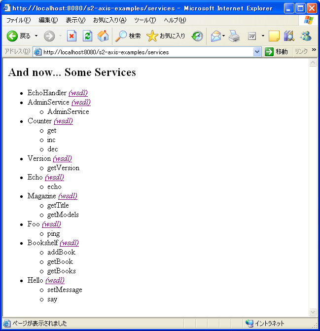

This is a document for S2Axis-V1.0.1. Documents for older versions of S2Axis are included in their respective distribution archive file.
S2Axis requires S2, S2Remoting, and Axis. Following versions are currently supported:
| S2Axis |
S2 |
S2Remoting |
Axis |
| 1.0.1 |
2.1.3 and later |
0.0.7 and later |
1.2 and later |
| 1.0.0 |
2.1.3 and later |
0.0.7 and later |
1.2 and later |
Not all combinations of versions have been tested. Following combination of versions have been tested:
Runtime Environment
S2Axis requires the following software:
- Sun JDK (J2SE SDK) 1.4 or later. S2Axis-V1.0.1 is developed using JDK 1.4.2_08. Sun JDK may be downloaded from here.
- S2 version 2.1.3 or later is required.
(When using J2SE5.0 or later, S2.2 or later is required.) S2Axis-V1.0.1 is developed and tested with S2.3.7. It may be downloaded from here.
- S2Remoting version 0.0.7 or later. S2Axis-V1.0.1 is developed and tested with S2Remoting-V1.0.0a. It may be downloaded from here.
- Axis version 1.2 or later is required. S2Axis-V1.0.1 is developed and tested with Axis 1.3 (Axis ver1.3 is included with S2Axis). It may be downloaded from here.
- Web container supporting Servlet2.3 or later is required. S2Axis-V1.0.1 is developed and tested with Tomcat 5.0.30. It may be downloaded from here.
Development Environment
Similar to other S2 software, S2Axis is distributed as archived Eclipse Java project.
- Eclipse3.0 or later is required. S2Axis-V1.0.1 is developed and tested with Eclipse3.1.2. It may be downloaded from here.
- S2 version 2.1.3 or later is required. (When using J2SE5.0 or later, S2.2 or later is required.) S2Axis-V1.0.1 is developed and tested with はS2.3.7. It may be downloaded from here. After downloading the file, import it to Eclipse workspace.
- S2Remoting version 0.0.7 or later is required. S2Axis-V1.0.1 is developed and tested with S2Remoting 1.0.0a. It may be downloaded from here. After downloading the file, import it to Eclipse workspace.
S2AxisExamples archive file is distributed as an Eclipse Tomcat project with Sysdeo Tomcat plugin.
- WTP (Web Tools Project) plugin is required. S2AxisExamples-V1.0.1 is developed and tested with WTP V1.0. It may be downloaded from here.
S2Axis and S2AxisExamples may be downloaded from here.
S2Axis
- After downloading
S2Axis-V1.0.1.zip file, extract the content to some directory.
- Execute Eclipse and select [File]-[Import] from the menu.
- From [Import] wizard, select [Existing Projects into Workspace] and then select the [Next>] button.
- Select [Select root directory] radio button and then select the [Browse] button to the right of it. Browse through directories to the
s2axis directory where the archive files where extracted. Select the [OK] button to select this directory.
- Select the [Finish] button to import from this directory.
S2AxisExamples
- Extract files in the
S2AxisExamples-V1.0.1.zip archive file to a directory.
- Execute Eclipse and select [File]-[Import] from the menu.
- From [Import] wizard, select [Existing Projects into Workspace] and then select the [Next>] button.
- Select [Select root directory] radio button and then select the [Browse] button to the right of it. Browse through directories to the
s2axis-examples directory where the archive files where extracted. Select the [OK] button to select this directory.
- Select the [Finish] button to import from this directory.
To verify that software were properly installed, run the sample program.
- Right click the s2axis-examples project and select [Run As]-[Run on Server].
- Check to be sure the following message appears in the console view "Info: Server startup in 99999 ms".
- Open a web browser (such as Mozilla Firefox) and open the URI:
http://localhost:8080/s2axis-examples/services
- If a page similar to the following appears, S2Axis example was successfully installed.

If there is an error, there may be some error in web container settings.
|